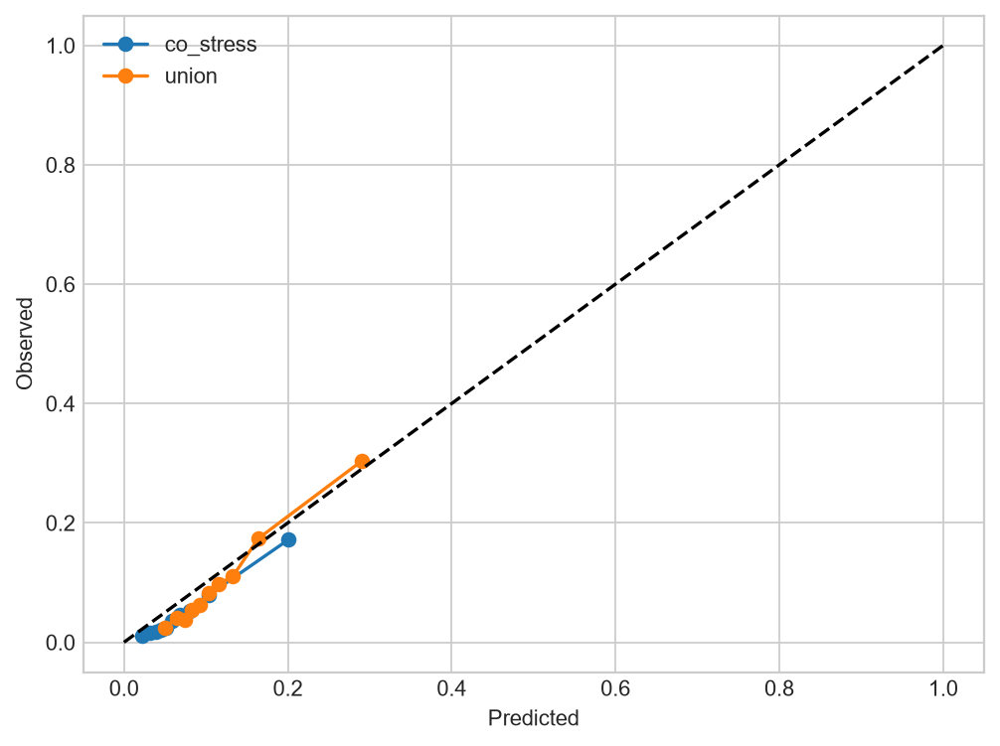
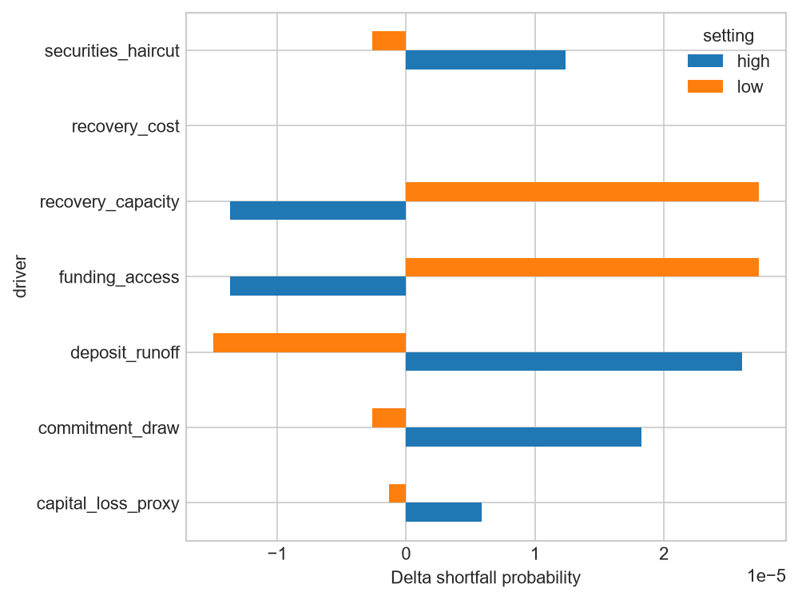

Scientific status: This is a v1.1 diagnostic validation extension. The original v1 locked result is unchanged. Post-hoc findings and pseudo-live recalibration are not new confirmatory holdout results.
Rows stored: 19. The table below is a concise view; complete evidence is in Parquet and the v1.1 DuckDB.
| analysis | model | driver | setting | shortfall_probability | pfn | recovery_cost | reverse_stress_threshold | delta_shortfall_vs_champion | common_random_numbers | profiles | draws_per_profile |
|---|---|---|---|---|---|---|---|---|---|---|---|
| model_uncertainty | B8_lightgbm_quantile | predictive_distribution | base | 2.01823e-05 | 3.40942e-06 | 4.0913e-07 | 0.0573719 | 0 | True | 12000 | 128 |
| model_uncertainty | B5_linear_quantile | predictive_distribution | base | 6.96615e-05 | 1.25799e-05 | 1.50958e-06 | 0.0638529 | 4.94792e-05 | True | 12000 | 128 |
| model_uncertainty | B7_xgb_quantile | predictive_distribution | base | 0 | 0 | 0 | 0.0636862 | -2.01823e-05 | True | 12000 | 128 |
| model_uncertainty | B10_gru | predictive_distribution | base | 2.34375e-05 | 3.99926e-06 | 4.79911e-07 | 0.0773712 | 3.25521e-06 | True | 12000 | 128 |
| model_uncertainty | RAHQ_C_nn | predictive_distribution | base | 0 | 0 | 0 | 0.0863191 | -2.01823e-05 | True | 12000 | 128 |
| scenario_assumption_uncertainty | B8_lightgbm_quantile | deposit_runoff | low | 5.20833e-06 | 2.76068e-07 | 3.31282e-08 | 0.0458976 | -1.4974e-05 | True | 12000 | 128 |
| scenario_assumption_uncertainty | B8_lightgbm_quantile | deposit_runoff | high | 4.6224e-05 | 1.15584e-05 | 1.38701e-06 | 0.0688463 | 2.60417e-05 | True | 12000 | 128 |
| scenario_assumption_uncertainty | B8_lightgbm_quantile | funding_access | low | 4.7526e-05 | 1.05707e-05 | 1.26849e-06 | 0.0573719 | 2.73437e-05 | True | 12000 | 128 |
| scenario_assumption_uncertainty | B8_lightgbm_quantile | funding_access | high | 6.51042e-06 | 7.4298e-07 | 8.91576e-08 | 0.0573719 | -1.36719e-05 | True | 12000 | 128 |
| scenario_assumption_uncertainty | B8_lightgbm_quantile | securities_haircut | low | 1.75781e-05 | 2.65842e-06 | 3.19011e-07 | 0.0573719 | -2.60417e-06 | True | 12000 | 128 |
| scenario_assumption_uncertainty | B8_lightgbm_quantile | securities_haircut | high | 3.25521e-05 | 5.50691e-06 | 6.60829e-07 | 0.0573719 | 1.23698e-05 | True | 12000 | 128 |
| scenario_assumption_uncertainty | B8_lightgbm_quantile | commitment_draw | low | 1.75781e-05 | 2.48264e-06 | 2.97917e-07 | 0.0573719 | -2.60417e-06 | True | 12000 | 128 |
| scenario_assumption_uncertainty | B8_lightgbm_quantile | commitment_draw | high | 3.84115e-05 | 6.23983e-06 | 7.48779e-07 | 0.0573719 | 1.82292e-05 | True | 12000 | 128 |
| scenario_assumption_uncertainty | B8_lightgbm_quantile | capital_loss_proxy | low | 1.88802e-05 | 3.01486e-06 | 3.61784e-07 | 0.0573719 | -1.30208e-06 | True | 12000 | 128 |
| scenario_assumption_uncertainty | B8_lightgbm_quantile | capital_loss_proxy | high | 2.60417e-05 | 4.33565e-06 | 5.20278e-07 | 0.0573719 | 5.85938e-06 | True | 12000 | 128 |
| scenario_assumption_uncertainty | B8_lightgbm_quantile | recovery_capacity | low | 4.7526e-05 | 1.05707e-05 | 1.26849e-06 | 0.0573719 | 2.73437e-05 | True | 12000 | 128 |
| scenario_assumption_uncertainty | B8_lightgbm_quantile | recovery_capacity | high | 6.51042e-06 | 7.4298e-07 | 8.91576e-08 | 0.0573719 | -1.36719e-05 | True | 12000 | 128 |
| scenario_assumption_uncertainty | B8_lightgbm_quantile | recovery_cost | low | 2.01823e-05 | 3.40942e-06 | 2.72753e-07 | 0.0573719 | 0 | True | 12000 | 128 |
| scenario_assumption_uncertainty | B8_lightgbm_quantile | recovery_cost | high | 2.01823e-05 | 3.40942e-06 | 6.81884e-07 | 0.0573719 | 0 | True | 12000 | 128 |

